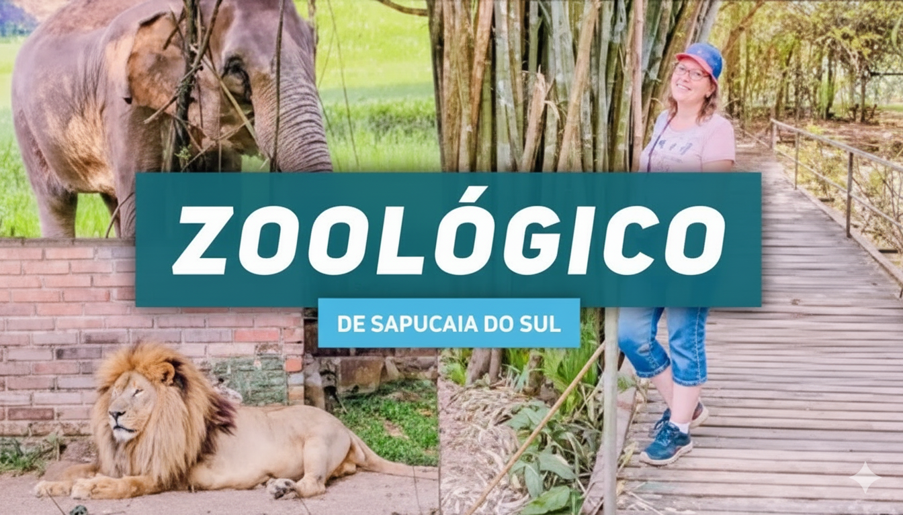
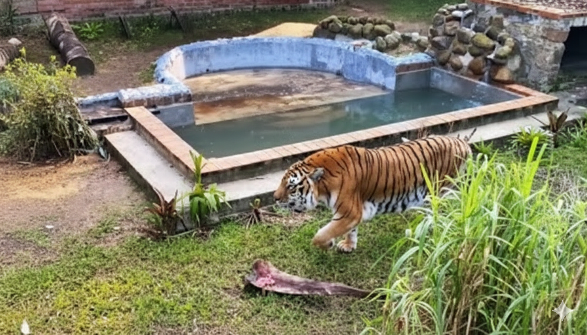
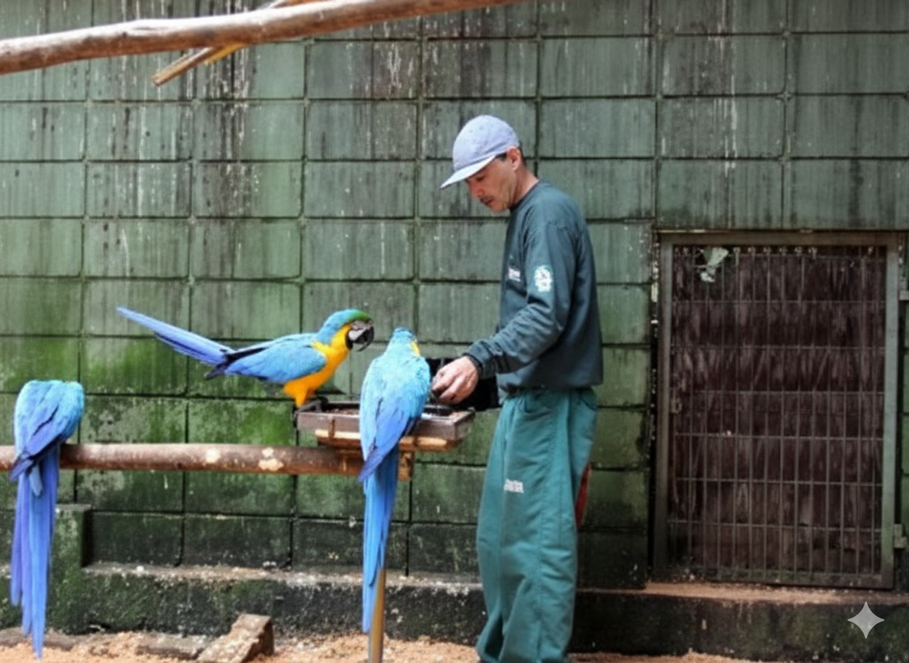

Parque Zoológico do Rio Grande do Sul
Localização: Parada 41 da BR-116, em Sapucaia do Sul.
Características: É um centro de educação ambiental, conservação da fauna e acolhimento de animais
silvestres. Muitos animais presentes são resgatados de situações de risco.
Atividades: Oferece um passeio para conhecer a fauna brasileira e exótica, com mais de 1000 animais
de cerca de 130 espécies.
Reabertura: Reabriu ao público em julho de 2025.
Observação: A venda de ingressos é feita online e na bilheteria, mas é aconselhável levar dinheiro
em espécie, pois o cartão pode não ser amplamente aceito.
Ler mais

História
Foi inaugurado em 1962. Possui 160 hectares de reserva natural e mantém mais de mil animais de
aproximadamente 150 espécies de todas as partes do mundo, incluindo espécies nativas ameaçadas,
procurando reproduzir em seus espaços uma aproximação de seus habitats de origem.
O Parque Zoológico do RS é um dos maiores da América do Sul e foi qualificado como referência
nacional pelo IBAMA, desenvolvendo projetos científicos e preservando e reproduzindo espécies
nativas ameaçadas de extinção. Sua grande área verde tem grande valor ecológico para a região
Metropolitana de Porto Alegre. Sempre foi uma atração popular, recebendo mais de 500 mil
visitantes pagantes por ano.
araras no Parque Zoológico
Atualmente é administrado pela Secretária do Meio Ambiente e Infraestrutura do Estado do Rio Grande
Ler mais

importância do zoológico
A importância dos zoológicos reside principalmente na conservação de espécies ameaçadas, na educação
ambiental e na pesquisa científica. Eles criam ambientes seguros para a reprodução de animais em
risco, educam o público sobre a importância da biodiversidade e realizam pesquisas que contribuem
para a preservação da vida selvagem.
Conservação de espécies
Proteção: Zoológicos oferecem proteção contra caçadores, predadores, perda de habitat e fome.
Reprodução: Muitos têm programas de reprodução que ajudam a aumentar as populações de espécies
ameaçadas, como o panda, a ararinha-azul e o mico-leão-dourado.
Reabilitação: Podem ser um lar seguro para animais que não podem ser reintroduzidos na natureza,
como os resgatados de tráfico ou acidentes, oferecendo cuidados veterinários adequados.
Ler mais